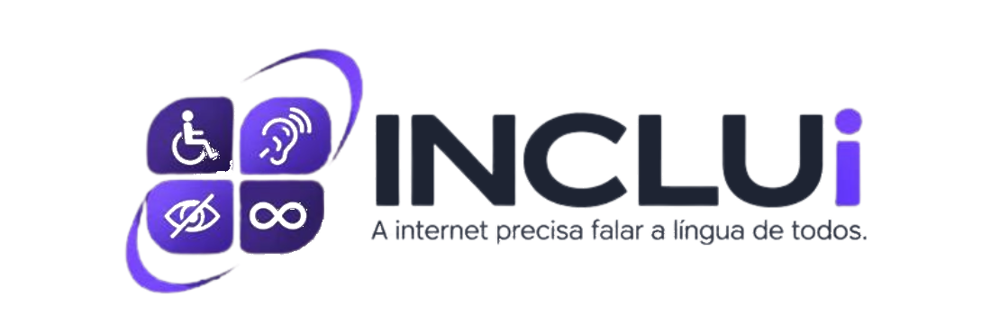

DOCUMENTOS
Tirar meus documentos
Saiba por onde começar e o que levar.

Fale com a genteCONHEÇA O INCLUI
O INCLUI é um guia digital que ajuda a encontrar e entender orientações sobre documentos, saúde, benefícios e outros serviços — com diferentes formas de acessar a informação.
Você escolhe os recursos que fazem sentido para você.
Informação para o seu dia a dia ✦
Orientações sobre serviços públicos, com mais clareza.
COMECE POR AQUI
Informação organizada para ajudar
você a dar o próximo passo.
Saiba por onde começar e o que levar.
Descubra quais apoios podem existir para você.
Encontre orientações para cuidar de você.
Veja orientações para buscar oportunidades.
MENOS BUROCRACIA, MAIS AUTONOMIA
Orientações públicas podem vir cheias de palavras complicadas. O INCLUI ajuda a transformar a informação em passos mais fáceis de entender.
Para solicitar a segunda via do documento de identidade, compareça ao posto de atendimento com sua certidão de nascimento ou casamento e comprovante de residência.
Esta é uma prévia da funcionalidade. O texto digitado não é enviado nem salvo.
ACESSIBILIDADE NÃO É UM BOTÃO
O mesmo direito. Diferentes caminhos.
Você escolhe o seu.
Orientações em áudio para entender cada etapa com calma.
Conteúdos visuais, legendas e materiais em língua de sinais.
Informação simples, com exemplos e instruções passo a passo.
Personalize sua experiência conforme as suas necessidades.
TECNOLOGIA COM PROPÓSITO